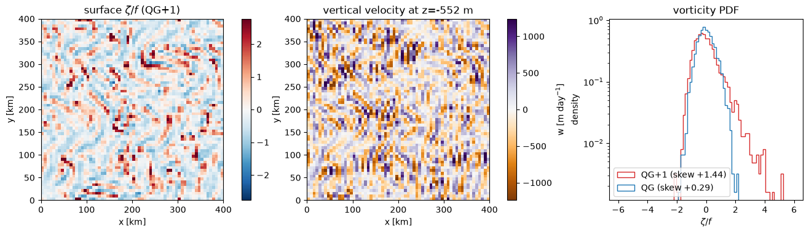
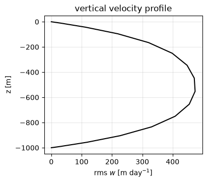

Next-Order (QG+1) Submesoscale Dynamics
This example runs the QGPlus1Model, a
next-order-in-Rossby balanced model (Dù, Smith & Bühler 2024). Ordinary
quasigeostrophy is the leading-order balance; QG+1 carries the
asymptotic expansion one order further in the Rossby number, which adds
the ageostrophic motions responsible for submesoscale physics that QG
cannot represent: a self-consistent vertical velocity, frontogenesis,
and the cyclone/anticyclone asymmetry (long cyclonic vorticity
tails) seen in the upper ocean.
The model is built on the same continuous Chebyshev vertical engine as
ContinuousQGModel; the leading-order
inversion is identical, and three further Poisson problems (sharing the
same operator) give the first-order corrections.
import functools
import math
import matplotlib.pyplot as plt
import jax
jax.config.update("jax_enable_x64", True)
import jax.numpy as jnp
import numpy as np
import pyqg_jax
Construct and Run
We use the Eady mean state (uniform \(N^2\), uniform shear
\(U = \Lambda z\)), which drives a baroclinic instability that saturates
into submesoscale turbulence. The construction matches
ContinuousQGModel — we build once to
read the vertical grid, then set the background \(U(z)\).
DT = 150.0
T_MAX = 5 * 86400.0 # 5 days
H = 1000.0
N_BV = 1e-3
SHEAR = 8e-4
base = pyqg_jax.qgplus1_model.QGPlus1Model(
nx=64, nz=16, L=4e5, H=H, f=1e-4, beta=0.0, N2=N_BV**2,
precision=pyqg_jax.state.Precision.DOUBLE,
)
stepped_model = pyqg_jax.steppers.SteppedModel(
pyqg_jax.qgplus1_model.QGPlus1Model(
nx=64, nz=16, L=4e5, H=H, f=1e-4, beta=0.0, N2=N_BV**2,
U=SHEAR * base.z,
precision=pyqg_jax.state.Precision.DOUBLE,
),
pyqg_jax.steppers.AB3Stepper(dt=DT),
)
model = stepped_model.model
stepped_model
SteppedModel(
model=QGPlus1Model(
nx=64,
ny=64,
nz=16,
L=400000.0,
W=400000.0,
H=1000.0,
f=0.0001,
g=9.81,
beta=0.0,
N2=f64[16],
U=f64[16],
rek=0.0,
filterfac=23.6,
precision=<Precision.DOUBLE: 2>,
),
stepper=AB3Stepper(dt=150.0),
)
Note
The prognostic state and time-stepping are the same as the leading-order model — QG+1 only changes the tendency, advecting the potential vorticity by the full next-order velocity (including the vertical advection \(w\,\partial_z q\)). Like the continuous model, the clustered Chebyshev grid is stiff and needs a small time step.
key = jax.random.key(0)
q0 = 1e-7 * jax.random.normal(key, (model.nz, model.ny, model.nx))
q0 = q0 - q0.mean(axis=(-2, -1), keepdims=True)
init_state = stepped_model.initialize_stepper_state(
model.create_initial_state(key).update(q=q0)
)
@functools.partial(jax.jit, static_argnames=["num_steps"])
def roll_out(state, num_steps):
final, _ = jax.lax.scan(
lambda c, _: (stepped_model.step_model(c), None), state, None, length=num_steps
)
return final
final_state = roll_out(init_state, math.ceil(T_MAX / DT)).state
The Next-Order Fields
The next_order() method
returns the first-order corrections and the reconstructed velocities; the
vertical velocity has its own convenience method
vertical_velocity().
f = model.f
res = model.next_order(final_state)
# next-order surface relative vorticity zeta = v_x - u_y
zeta = np.asarray(
jnp.fft.irfftn(
1j * model.k * res["vh"][0] - 1j * model.l * res["uh"][0],
s=(model.ny, model.nx),
)
) / f
# vertical velocity (zero at the rigid lid/floor; shown at mid-depth)
w = np.asarray(model.vertical_velocity(final_state))
z = np.asarray(model.z)
midlev = int(np.argmin(np.abs(z + H / 2)))
# leading-order (QG) vorticity for comparison
ph = model._apply_a_ph(final_state)
zeta_qg = np.asarray(
jnp.fft.irfftn(-model.wv2 * ph[0], s=(model.ny, model.nx))
) / f
def skew(a):
return ((a - a.mean()) ** 3).mean() / a.std() ** 3
The left panel is the surface vorticity \(\zeta/f\): note the asymmetry — intense, thin cyclonic filaments (positive, red) against broader, weaker anticyclones, the hallmark of submesoscale turbulence that QG’s symmetry forbids. The middle panel is the next-order vertical velocity at mid-depth (m day\(^{-1}\)), collocated with the fronts. The right panel is the vorticity PDF: QG+1 develops a long positive (cyclonic) tail, while leading-order QG stays nearly symmetric.
km = 1e-3
L = model.L
day = 86400.0
fig, axs = plt.subplots(1, 3, figsize=(13, 3.7), layout="constrained")
amp = float(np.percentile(np.abs(zeta), 99))
im = axs[0].imshow(
zeta, cmap="RdBu_r", vmin=-amp, vmax=amp, origin="lower",
extent=(0, L * km, 0, L * km),
)
axs[0].set_title("surface $\\zeta/f$ (QG+1)")
axs[0].set_xlabel("x [km]")
axs[0].set_ylabel("y [km]")
fig.colorbar(im, ax=axs[0])
wm = float(np.percentile(np.abs(w[midlev] * day), 99))
im = axs[1].imshow(
w[midlev] * day, cmap="PuOr", vmin=-wm, vmax=wm, origin="lower",
extent=(0, L * km, 0, L * km),
)
axs[1].set_title(f"vertical velocity at z={z[midlev]:.0f} m")
axs[1].set_xlabel("x [km]")
axs[1].set_ylabel("y [km]")
fig.colorbar(im, ax=axs[1], label="w [m day$^{-1}$]")
bins = np.linspace(-6, 6, 80)
axs[2].hist(
zeta.ravel(), bins=bins, density=True, histtype="step", color="C3",
label=f"QG+1 (skew {skew(zeta):+.2f})",
)
axs[2].hist(
zeta_qg.ravel(), bins=bins, density=True, histtype="step", color="C0",
label=f"QG (skew {skew(zeta_qg):+.2f})",
)
axs[2].set_yscale("log")
axs[2].set_title("vorticity PDF")
axs[2].set_xlabel("$\\zeta/f$")
axs[2].set_ylabel("density")
axs[2].legend()
<matplotlib.legend.Legend at 0x7f088027a5d0>

The positive skewness of the QG+1 distribution is the quantitative signature of the cyclone/anticyclone asymmetry. It arises because the first-order corrections are driven by quadratic products of the leading-order field, so changing the sign of the flow does not change the sign of the corrections — the symmetry that makes QG statistics artificially symmetric is broken at next order.
Note
The next-order quadratic source terms are evaluated on the grid and controlled by the standard spectral filter rather than full 3/2 dealiasing, so the finest scales of the correction fields carry some grid-scale noise at this modest resolution. The robust, converged result is the statistic (the cyclonically skewed PDF); sharper instantaneous fields come from higher resolution.
Vertical Velocity Structure
The vertical velocity vanishes at the rigid lid and floor and is strongest in the interior, concentrated at the fronts.
fig, ax = plt.subplots(figsize=(4, 3.5), layout="constrained")
ax.plot(np.sqrt((w**2).mean(axis=(-1, -2))) * day, z, "k-")
ax.set_xlabel("rms $w$ [m day$^{-1}$]")
ax.set_ylabel("z [m]")
ax.set_title("vertical velocity profile")
ax.grid(True, alpha=0.3)

This w is the same quantity targeted by surface-observation methods for
estimating submesoscale vertical transport. Because the whole model is
written in JAX it is differentiable and vmap/jit-compatible, so it
can be embedded directly in data-assimilation or sensitivity workflows.